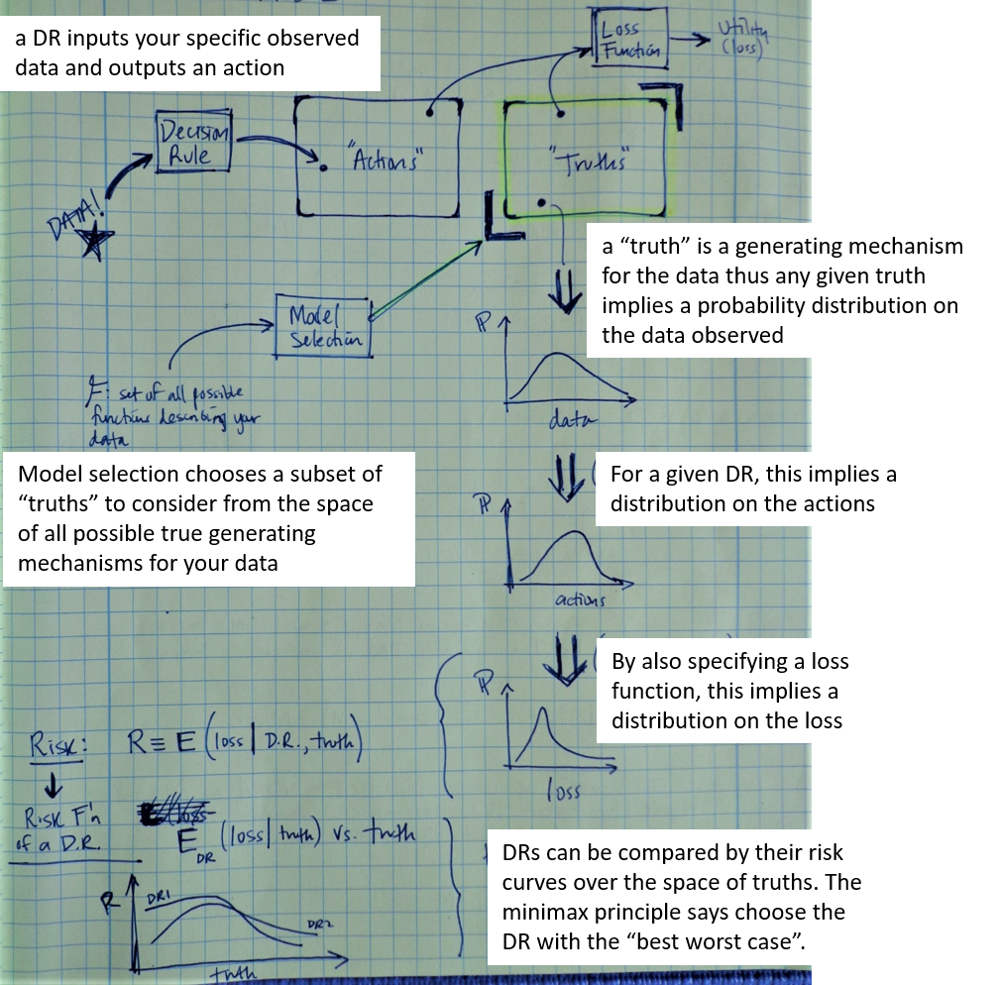
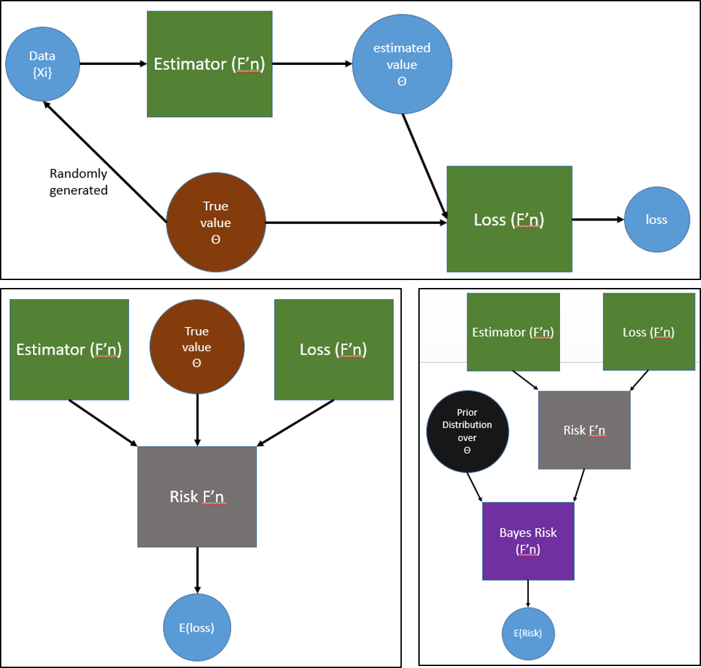

In which I find that the word model is used with reckless abandon in statistical discourse.¶
In intro stats material there are rather a lot of disparate analysis techniques - Bayesian models, least squares linear regression, hypothesis testing... I found this a bit disorienting, but an obliging statisics PhD student informed me that actually there is a kind of unifying framework for this grab bag of stuff - it's called the decision theoretic framework for data analysis (DTFoA). So this is my attempt to summarize the general logical framework underlying data analysis in the real world, as pertains to the stuff that we usually encounter in learning statistics for data science. So far this framework has worked really well to anchor new ideas I've come across and I also think it can promote a better perspective (less tunnel vision) when actually doing data analysis.
First a quick reminder of where inference from data (the non-exploratory part of data analysis) sits in relation to probability.
Probability: we have a known distribution generating the data and we want to make statements about likely random variable (RV) outcomes.
Statistical Inference: we have a known RV outcome and we want to make statements about the possibility of different generating distributions.
Spaces of possible actions and possible truths¶
The motivation for data analysis is that you have to select one action among a set of possible actions. Ideally we would know the complete, true state of the world and use that to choose an action, but sadly all we have instead is some data. For example if a tailor needs to make a suit for someone, the actions might be making suits of all the possible lengths (discretized lets say). Ideally the tailor would know the man's true height ($Y$), but perhaps the data he has instead is the height of the man's father's ($X$). But note that actions can also be as nebulous as "moving forward with a certain belief about the world".
The true state of the world at any time is an element of a set of possible truths. For analysis, since we want our data to help us zero in on the correct truth, it is useful to parameterize the set of truths in terms of the generating mechanism for your data. A generating mechanism is a mathematical representation of how you think the physical world really works to create this kind of data. For instance, back to the boring tailor example, one truth state is that $Y\sim \mathcal{N}(X,1)$, while another is $Y\sim \mathcal{N}(2X, 1)$ etc. It is also very useful to parameterize your set of possible actions in the same way, for instance, one action is to move forward with your life acting as though $Y\sim \mathcal{N}(X,1)$, while another is to move forward acting as though $Y\sim \mathcal{N}(2X, 1)$. Note that the truths are stochastic generating mechanisms, so if you made two identical copies of a universe with the same truth, they can still possess different values of the data. It's easy to see that knowing the generating mechanism (the truth) gives you a clue as to what data you expect to see, but in data analysis we use the relationship in the opposite direction: the data we see gives us a clue as to which of the possible mechanisms actually generated it i.e. which action we should take. To summarize, we have a space of actions and a space of truths and in many analyses the actions are choosing a specific truth i.e. they are the same space.
Loss Functions: Utility resulting from an (action, truth) pair¶
A loss function is a mapping from the points (action, truth) to utility values. It quantifies how much utility you lose if you take a given action when the world is in a given true state. We assume utility is the thing that humans care about maximizing in their lives. Writing down an accurate loss function is hard, and the choice is guided by convenience. It is common to define the loss as some distance measure between the two distributions (real truth and chosen truth i.e. action). It is also common to define loss in terms of the difference between the values of the parameters parameterizing those distrbutions. If you knew the true world state, you would obviously just choose the action that minimizes the loss function Sadly this is never the case, instead you have data - measurements of some elements of the world, present or past. But again, we believe the data that we observe gives us clues about the true generating mechanism for such data.
Decision Procedures: How to use the data to choose an action¶
So we would like to use the data we have to guide our choice of action. A decision rule or decision procedure (DP) is a procedure that takes in data and chooses an action, that is a decision procedure is a mapping from data to actions. But there are a lot of possible DPs, so the task has been transformed from choosing an action to choosing a DP - then the data can be fed into the DP and it outputs an action. So how to choose a decision procedure? It's natural to let analytical or computational feasibility guide this decision. Beyond that, a common way to compare DPs is to visualize their Risk Curves.
Assuming some form of the loss function, Risk is the expected value of loss given a particular truth and a particular decision procedure,
\begin{align} R = \mathbf{E}(\mathrm{loss}\; \lvert \; \mathrm{truth, DP}). \end{align}It is easy to picture this in steps:
- A truth specifies a particular generating mechanism for the data, so any given truth will imply a probability distribution over the possible values of the data set. This should be understood as the probabilities resulting from an ensemble of identical universes having this truth generating the data.
- This probability distribution over the data gives a probability distribution over actions by applying the given Decision Procedure.
- This probability distribution over actions gives a probability distribution over loss by applying the loss function (where the truth is fixed as the one generating this distribution).
So fixing a truth and a decision rule implies a probability distribution over loss values. The Risk is the expectation of loss over this distribution.
The Risk Function for a decision procedure is simply a plot of Risk as a function of truth states, and it is a useful way to compare different DPs. Still it is not completely clear how to choose a DP, since we don't know which truth is correct. In comparing risk curves for different decision procedures there are a few approaches. First of all, if one DP has lower risk everywhere compared to another, then it is strictly better and the latter DP is called inadmissable. Second, if you are a Bayesian you might take into account your prior on the truths when comparing Risk Curves of DP. Finally, another somewhat intuitive approach is to choose the DP which has the "best worst case scenario" meaning it's maximum risk value is lower than all the other DP's maximum risk values - this is called the minimax rule.
Models: Restricting what truths we consider¶
Now if we are comparing Risk Curves to choose a DP or constructing a DP to choose an action, then realistically we are going to be working with a very, very restricted subset of possible truths (since the real space of all truths is infinite and analytically messy). The small slice of truths that we decide to put into the running for consideration is called a model or model class, and choosing this subset has a large impact on your analysis. This is because for choosing a DP you're going to be comparing Risk Curves only as they appear over that little slice of truths, and your action is going to be picking one of these truths from only this little slice of possible truths.
So now we have the additional question of how to do model selection i.e. choosing the subset of truths to consider in your analysis. A model usually takes the form of a parametric family of distributions (or stochastic functions), and a model class is a set of such families of increasing complexity. An example of a model class is the set
\begin{align} \{ Y = aX + \epsilon,\\ Y = bX^2 + aX + \epsilon, \\ Y = cX^3+bX^2+aX+\epsilon, ...\}, \end{align}where $\epsilon$ is a stochastic noise term, and each element in the set represents a family (a model) since the parameters can take a range of values. A large model (model class) containing many member distributions which can fit most data is good as it represents an openness to the various forms the truth could take. But since more complex distributions always do a better job fitting data, an important component of the DP is to somehow penalize the members of the model based on how complex they are. It also has historically been desirable to choose models which are analytically feasible, meaning people were able to derive statements about e.g. how likely certain outcomes are assuming this form for the data generating mechanism and such and such DP. It is also reasonable to want your model to accord with some physical intuition about the system of interest, so that after applying your DP to choose a particular distribution (function) from the model, you can gain some physical insight from the values of the parameters. You can more readily make educated guesses about the behavior of similar systems if there are a small number of parameters in your result which all have some physical meaning. In all cases it is important to remember that there are really three levels of uncertainty in your analysis:
- Uncertainty in future predictions due to the stochastic nature of the chosen truth.
- Uncertainty in your selection of the truth due to the stochastic nature of the data you rely on to make this choice.
- Uncertainty at the heart of your analysis due to model selection which restricts what truths are even under consideration.
Some Common Topics Interpreted in the DTFoA¶
The subsections that follow begin to introduce some of the terms or ideas that are very common in introductory statistical analysis, but it introduces them in terms of this framework so that hopefully they seem less like disembodied bits of knowledge.
Estimators: Decision procedures when actions are choosing one truth¶
If actions and truths are represented by the same space, that space being the set of possible true data generating mechanisms defined by the model, the analysis is called estimation. This is because the mathematical description of the data generating mechanism is in terms of some number of parameters, so the analysis is seeking to estimate values of these parameters. There are two common instantiations of this:
- Density estimation, where your data is a set of draws from a population, and your truths/actions are forms of the underlying population probability density.
- Function estimation, where your data is a set of variable tuples, like $(X_1, X_2, X_3, Y)$, and your truths/actions are functional relationships between the variables.
In the former kind of analysis you seek to estimate the values of the parameters of the distribution, in the latter the parameters of the function. The possible densities or functions under consideration are those defined by your choice of model. Note that the functions are stochastic (if your model was deterministic then you would be able to get the parameter values by direct calculation from your data points!).
An estimator is simply a decision rule used in estimation type analyses. In function estimation, because our truths are stochastic, we are essentially seeking to estimate conditional densities e.g. the distribution of $Y$ given $\{X_i\}$. Thus in function estimation your model class will be a set of families of conditional distributions. In almost all cases function estimation is concerned with writing one of the variables as an explicit function of the others like $Y = f(X_1, X_2, X_3, \vec{\Theta})$, where $\Theta$ is a vector of unmeasured parameters. The most common application of this is to predict future $Y$s based on future measurements of the $X$s. In this case function estimation conveniently breaks down into two cases:
- categorical estimation (logistic regression), where $Y$ is a discrete categorical variable.
- regression, where $Y$ is a continuous function of $X$s.
In general terms a statistic, $\delta(\vec{X})$, is any computable function of the data, so an estimator is a statistic that we use to make our estimate of parameter value. Given some model for the data generating mechanism, a statistic has a sampling distribution which describes the distribution of the computed value of the statistic given some value for the parameter of the data-generating distribution. When a statistic is serving as an estimator, the sampling distribution for the statistic is the same as the distribution over actions of an estimator.
An example of a statistic is the sample mean, $\bar{X}$, just the average of the values in any data set. Assuming i.i.d. with $X_i \sim Exp(\theta)$, this statistic will have some sampling distribution over $\{X_i\}$ values which is a function of $\theta$. First recall each single $X_i$ will have mean $1/\theta$ and variance $1/\theta^2$ which are properties of the exponential distribution. Now also recall that for a sum of independent RVs both the expectation and the variance can distribute inside the sum! So we have:
\begin{align*} \mathrm{E}[\bar{X}] = \mathrm{E}[\frac{1}{n}\Sigma X_i] = \mathrm{E}[X] = \frac{1}{\theta},\\ \mathrm{Var}(\bar{X}) = \mathrm{Var}(\frac{1}{n}\Sigma X_i) = \frac{1}{n} \mathrm{Var}(X) = \frac{1}{n\theta^2}. \end{align*}It makes sense that this statistic would have large variance when either the underlying distribution itself has large variance or our sample size is small.
Bias/Variance Decomposition: The Risk of any estimator when loss is squared error between the true and chosen parameter values¶
Another snippet that can be better understood in terms of this framework is the bias/variance decomposition for estimators. First note that a convenient loss function in estimation is squared error loss: the squared distance between the true value and the chosen value of the model parameters.
\begin{align*} L(\vec{X}) = (\delta(\vec{X})-\theta)^2, \end{align*}where $\theta$ is the true parameter value and $\delta(\vec{X})$ is the statistic comprising the estimation DP (it returns a chosen $\theta$ value). When you are using a squared error loss function then the Risk Function of your estimator is often called the mean squared error (MSE) which is consistent with Risk being the expectation of loss. One reason people like to work with MSE as a Risk Function is the following insight: If your action/truth spaces are the same (you're doing estimation) and your loss function is squared error , then for any DP the Risk Function (MSE) decomposes into two terms which are the bias of your DP and the variance of your DP.
To understand what is meant by the bias and variance of the estimator, think back again to the steps we walked through to picture the calculation of Risk. We said each truth implies a distribution on the data, which can be transformed into a distribution on actions by applying the DP. When truth and action live in the same space, you can picture this as each truth point inducing a probability distribution over a cloud of chosen actions via the DP. The bias of the estimator (DP) is the expectation of the squared distance between the true point and a randomly chosen action from this induced probability distribution. The variance of the estimator (DP) is just the variance of this induced probability distribution as it is normally defined. Remember that each point in truth space creates it's own little induced cloud via the DP, so this bias and variance will be calculated for each such truth point. Recognizing the estimtor as a statistic, we would be referring here to its sampling distribution
Since minimizing loss (and consequently Risk) is what we are concerned with, when squared error loss is the appropriate loss function we would prefer estimators which have both low bias (mean of the sampling distribution is close the the truth which induced that distribution) and low variance (a tight sampling distribution). Sadly for many estimators the bias and variance are coupled and cannot be minimized independently.
As a compelling example, if we would like to estimate the mean of an underlying population distribution, our data are $n$ i.i.d. draws $\{X_i\}$ and our model is that $X_i \sim N(\mu, 1)$, there are many estimators we could choose from. When we compare two candidates: $\bar{X}$ and $\frac{n}{n-1}\bar{X}$, where $\bar{X}$ is the typical sample mean, we find that the latter actually has lower MSE because the decrease in it's variance outweights the increase in it's bias.
Hypothesis Testing: Insisting on DPs within a certain Risk bound at the false positive (action, truth) point.¶
Hypothesis testing is a type of analysis that partitions the (action) x (truth) space in a particular way, and insists that the DP have Risk below some fixed value at the point (action=accept hypothesis as true, truth=hypothes is false), which is called a false positive.
Bayesian Analysis: DPs that involves using your prior belief about the truths¶
Bayesian analysis is a DP wherein you begin by assigning a prior on the truth space (a distribution capturing your preexisting beliefs about how likely each truth is). You then use the data to update those prior beliefs into a posterior distribution over the truths, and then often you choose some representative truth or mixture of truths to move forward with.
From the posterior Bayesians can make probabilistic statements about the future, but a full DP often requires a final step beyond obtaining the posterior, if e.g. you need one best guess for the next draw. The particular truth or mixture that might be best to move forward with depends on the the loss function, but in all cases the prior serves as a guide for comparing DPs. The Bayes Risk for a decision procedure is the expectation of the Risk function of the DP over the prior on the possible truths. If you have a prior that really reflects your current beliefs, and if you have an accurate loss function, then it could be argued that the only reasonable choice of DP is one which minimizes the Bayes Risk (which is known as the Bayes Estimator. This is because conceptually a prior represents a sample space of possible universes from which our universe is randomly drawn.
As an example, if the loss function is relative entropy between the real true distribution and the representative distribution that you move forward with, the thing which will minimize expected loss over an ensemble of universes is the posterior mixture (a distribution which is the posterior-weighted sum of the possible true distributions). On the other hand if the loss function is mean squared error between the parameter value of the true distribution and the parameter value of the distribution you move forward with, it is best to choose the representative distribution with the parameter value being the mean of the posterior.
Some Woefully Inadequate Graphics¶
Here are a couple very slapdash attempts at visualizing the DTFoA.

